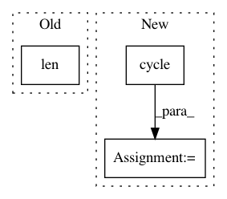

a649429a334e01a964e75065c812bce4391c0f5d,plots.py,,plot_roc_curve,#Any#Any#,373
Before Change
plt.plot(fpr, tpr, lw=1, label="ROC Fold %d (area = %0.2f)" % (i, roc_auc))
// plot mean ROC
plt.plot([0, 1], [0, 1], "--", color=(0.6, 0.6, 0.6), label="Luck")
mean_tpr /= len(cv)
mean_tpr[-1] = 1.0
mean_auc = auc(mean_fpr, mean_tpr)
plt.plot(mean_fpr, mean_tpr, "k--",
label="Mean ROC (area = %0.2f)" % mean_auc, lw=2)
After Change
mean_tpr = 0.0
mean_fpr = np.linspace(0, 1, 100)
plt.figure()
colors = cycle(["cyan", "indigo", "seagreen", "yellow", "blue", "darkorange"])
lw = 2
// cross-validation
i = 0
for (train, test), color in zip(cv.split(X, y), colors):
In pattern: SUPERPATTERN
Frequency: 3
Non-data size: 3
Instances
Project Name: ScottfreeLLC/AlphaPy
Commit Name: a649429a334e01a964e75065c812bce4391c0f5d
Time: 2016-10-09
Author: Mark.R.Conway@gmail.com
File Name: plots.py
Class Name:
Method Name: plot_roc_curve
Project Name: OpenNMT/OpenNMT-py
Commit Name: 23dffb96ac95827a3af89f6ff027d254284ba93c
Time: 2019-02-08
Author: guillaumekln@users.noreply.github.com
File Name: onmt/inputters/inputter.py
Class Name: DatasetLazyIter
Method Name: __iter__
Project Name: analysiscenter/batchflow
Commit Name: d490edce8fc483707c58e852286950ace7e8cb59
Time: 2020-07-08
Author: 7520522+a-arefina@users.noreply.github.com
File Name: batchflow/utils.py
Class Name:
Method Name: show_research